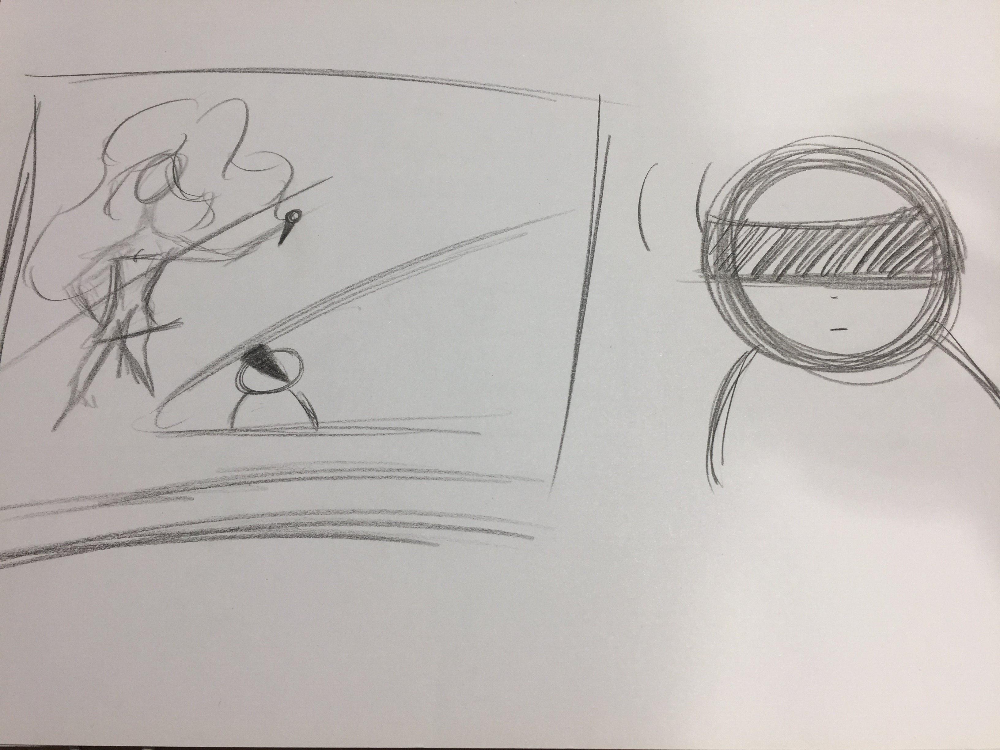
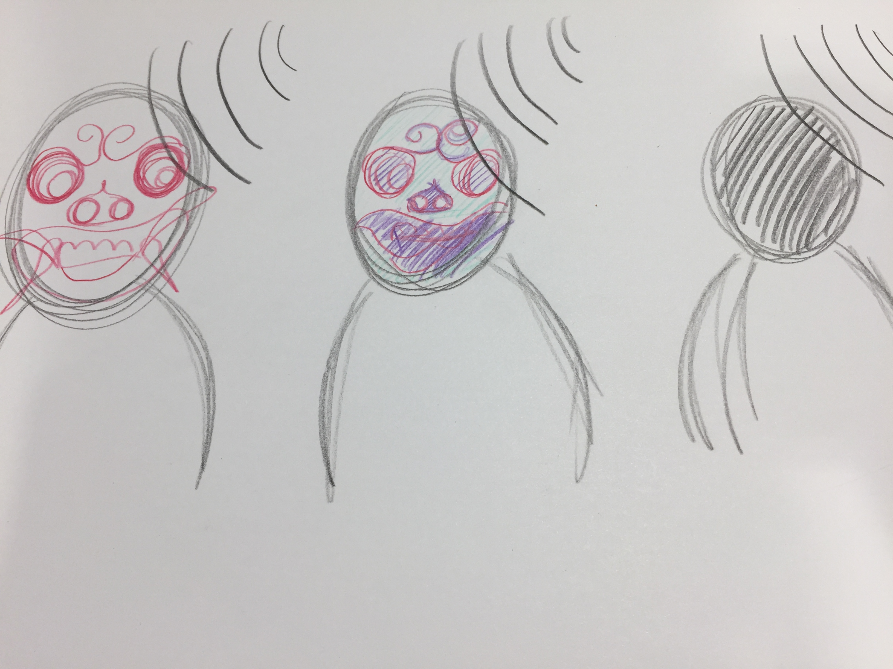
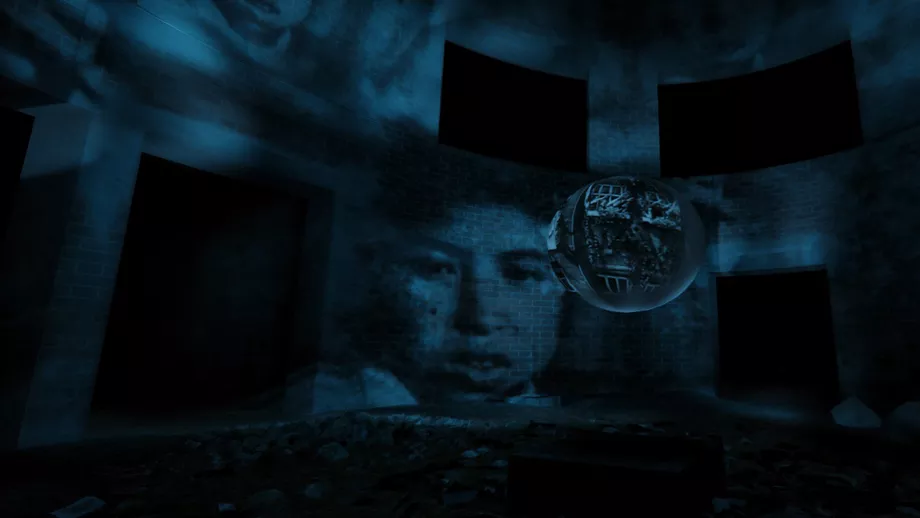
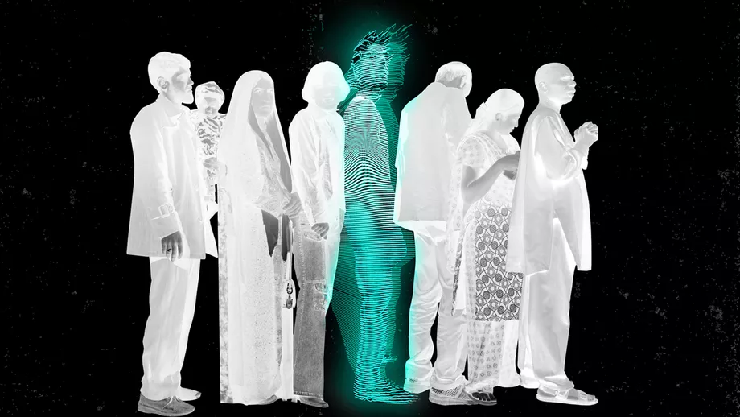

-
Assignment 1

Concept 1 - Public transport
Eén van de meest tijdrovende activiteiten op vakantie is het uitzoeken hoe het openbaar vervoer werkt als de taxi te duur is. Door het nieuwe concept kunnen vakantiegangers van tevoren ervaren hoe ze moeten navigeren als ze eenmaal in het land aankomen door middel van virtual reality. Ze krijgen informatie hoe ze kaartjes of speciale opwaardeer pasjes moeten kopen, hoe deze werken en hoe ze dit indien kunnen retouren. Ze kunnen zelf navigeren door het netwerk door gebruik te maken van trams, metro’s, bussen of-en iets dergelijks. Daarnaast zullen ze ook meteen zien waar de informatie balies zijn. Zo weten ze waar ze naartoe moeten als ze liever informatie willen vergaren van een persoon.
Concept 2 - Movement
Sommige mensen kunnen door fysieke of mentale beperkingen niet gemakkelijk naar optredens van hun favoriete artiesten. Ze kunnen soms recaps bekijken op internet of tv. Maar de beleving van het live meemaken is minder mogelijk. Een oplossing hiervoor is dat men tegen een betaling via een Oculus Rift de optreden kunnen bekijken. Alleen op het moment dat de daadwerkelijke optreden is. Zo krijgen zij het gevoel dat ze het daadwerkelijk hebben meegemaakt en dat ze alles als eerst hebben kunnen zien. Om het gevoel daadwerkelijker te maken voelen ze warmte van de stage, het gegil van het publiek, voelen ze bijna het zweet van de artiest op het podium.
Concept 3 – Art
Voor musicals of voorstellingen wordt het decor zo mooi en realistisch mogelijk gemaakt. Sommige voorwerpen zouden nog realistischer kunnen door kleine details, zoals de wind die door de bladeren waait. Door middel van belichting krijgt het decor een diepere ervaring. Als deze belichting zo op de boom wordt geschenen kan het lijken alsof de boom in een storm staat. Dit wordt dan niet alleen met bomen gedaan, maar bijvoorbeeld ook met een acteur/actrice die een mythisch wezen moet spelen. Ze hoeven niet geschminkt te worden of snel om te kleden in een ander kostuum. Zo kan ook gedaantewisselingen sneller ontwikkeld worden.
-
Assignment 2

The day the world changed
Door Gabo Arora, Saschka Unseld, Nathan Brown, Tom Lofthouse, Jennifer Tiexiera, Nate Robinson, Igal Nassima, and Fifer Garbesi.Virtual reality kunstenaars Gabo Arora en Saschka Unseld brengen de kijker terug naar 1945 bij de bomaanslag van Hiroshima en Nagasaki. De speler wordt geplaatst in een virtuele recreatie van een gebouw aangetast door een bomaanval. De speler kan met mensen praten die zich daar bevinden en het overleefd hebben.

The Day the World Changed valt voornamelijk op vanwege de dramatische visualisatie van een wereld die aangetast is door een nucleaire bom. Het zo echt mogelijk gemaakt, waardoor de speler zich goed kan inleven in het moment.
Ik vind dit een gaaf concept, omdat op deze wijze geschiedenis lessen veel beter begrepen worden. Veel studenten op middelbare scholen krijgen les in oorlogen die gepleegd zijn, maar het slaat soms/meestal niet hard genoeg aan voor de student om op het moment in te kunnen leven.
Op middelbare scholen worden zo nu en dan films afgespeeld en dit wordt vaak gezien als de leukere lessen. Alleen is dit niet interactief en kan het voorkomen dat het minder hard binnen komt. Om een geschiedenis les in een virtuele wereld te plaatsen, waar de student zich kan bevinden, zal de stof veel makkelijker en interessanter voor de student worden.
Terminal 3
Door Asad J. Malik, Kaleidoscope VR, Anita Gou, and RYOT.De speler krijgt een ervaring door een augmented reality game. Hij zal de douane spelen en zal toeristen die moslim zijn met als bestemming Amerika moeten ondervragen. De vragen zal hij moeten kiezen door middel van Hololens’ stemherkenningssysteem. Plottwist is dat Terminal 3 meer inspeelt op de empathie naar mensen toe. De onderwerpen voor de ondervraging zijn opgenomen hologrammen van echte mensen. Zij antwoorden vragen die gaan over werk, familie, religieuze overtuigingen met lange en diepgaande output.
Al snel zal de speler het niet meer zien als een ondervraging, maar als een heel goed gesprek. Oprichter Asad Malik heeft het spel merendeels naar zijn eigen ervaringen gemaakt, bij vliegvelden werd hij altijd uitgekozen om zichzelf te verklaren. “Nu op het moment ben ik een pro in de ondervragingen, ik vind het misschien zelfs een beetje leuk. Het is een rare guilty pleasure, omdat je jouw verhaal kwijt kan aan een getraind persoon die betaald wordt om naar jou te luisteren. Hij verteld vervolgens dat je in het spel kan kiezen of je heel autoritaire wil zijn of dat je gewoon een gesprek wil aangaan. Hij heeft zelf meegemaakt dat sommige ondervragers echt wilde weten wie hij was als persoon en zijn verhaal ook fijn vonden om aan te horen. Omdat het een HoloLens project is, is het nog niet geheel beschikbaar, maar het zal waarschijnlijk wel komen op een expo of event in de toekomst.
Dit zijn onderwerpen waar ik me graag mee bezig houd. Als het niet deze opleiding was dan had ik Theologie gestudeerd. Ik vind namelijk dat veel miscommunicatie is ontstaan in vele jaren over verschillende geloven, en dat zelfs mijn eigen vrienden slecht denken over iets dat enkel is opgezet uit liefde. Misschien dat mensen ook meer naar elkaar toe groeien als ze meer weten over het een en ander. Dit zijn concepten voor de toekomst.